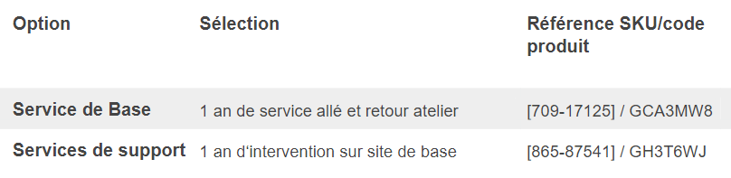

Mise en place du télétravail au sein de l’entreprise Assurmer
Choix de l'ordinateur pour Assurmer

Caractéristiques techniques

Nous avons choisi le Latitude 3520 de chez Dell. Tout d’abord il offrira un service de support ainsi qu’une garantie de constructeur qui lui permettra une longévité suffisante pour être tout d’abord amorti et aussi d’un point de vue écologique pour ne pas être remplacé trop rapidement. De plus avec Dell on peut retrouver chaque référence (ci-dessus) de chaque pièce de l’ordinateur. Ce qui permet d’assurer une trace pour trouver des pièces détachées de l’ordinateur.
Dans un second temps ce choix s’oriente sur cet ordinateur pour ses composants. Notamment son processeur très récent afin de réduire au maximum l’obsolescence de l’ordinateur. De plus nous avons décidé de prendre un processeur multicoeurs afin de permettre aux utilisateurs d’effectuer du multitâche sans aucun souci et avec une cadence de processeur élevée pour réduire au maximum les temps de réponses de calculs. Intel® Core™ i5-1135G7 de 11e génération (4 coeurs, 8 Mo de mémoire cache, à partir de 2,4 GHz, jusqu'à 4,2 GHz). Ensuite pour la carte vidéo nous sommes une entreprise d’assurances. Il n’est donc pas nécessaire d’avoir une puce graphique puissante pour l’utilisation lambda de nos collaborateurs, étant donné qu’ils n’ont pas une utilisation de photo ou vidéo. Donc la puce graphique intégrée Intel® Iris® Xe pour processeur i5-1135G7 suffira totalement pour nos salariés.
Cependant pour la mémoire vive pour une bonne utilisation d’un ordinateur, il est nécessaire d’avoir 8 Go de mémoire vive en DDR4 et cadencée à une fréquence de 3200 MHz, afin que le processeur puisse être exploité dans des conditions optimales, afin de ne pas brider les capacités du processeur choisi et ainsi de permettre une longévité suffisante du produit dans le temps.
De plus, la solution de stockage de masse choisie pour répondre aux demandes de nos salariés est parfaitement conçue pour des traitements de grandes quantités de données et pour un stockage en grande quantité dans une grande longévité. Ajouté à cela un besoin d’accès rapide aux données et des débits de transfert de données efficaces pour permettre de meilleures performances au sein de l’entreprise.
S’ajoute à cela une connectivité fiable aux réseaux, sécurisée et de haute performance pour les utilisateurs pour réduire ainsi la latence sur internet mais aussi pour communiquer facilement avec l’infrastructure de notre entreprise. S’ajoute aussi une meilleure qualité des réunions en visioconférences quand ils sont en télétravail ou dans d’autres établissements. C’est pour cela qu’on a choisi un ordinateur qui offre les plus récentes technologies en termes de connectivités à un réseau le Intel Wi-Fi 6 AX201 2x2 802.11ax 160 MHz + Bluetooth 5.1 et un port RJ45.
Enfin, pour permettre aux utilisateurs une condition visuelle optimale durant le temps de travail nous avons choisi une taille d’écran standard et une définition de bonne qualité pour éventuellement les personnes qui auraient des déficiences de vue. Nous avons donc choisi un Écran non tactile 15,6" Full HD (1 920 x 1 080) antireflet, 250 cd/m². Cette taille permet aussi de faire profiter à nos comptables ou d’autres services de l’entreprise de profiter d’un pavé numérique. Par exemple pour la saisie de factures et ainsi gagner en performance. Il est aussi doté d’un clavier rétroéclairé pour lui permettre de s’adapter aux lieux avec une faible luminosité.
Cependant, nos utilisateurs qui seront en télétravail auront besoin de faire régulièrement des réunions en visioconférence. Ils devront alors être équipés d’un ordinateur qui profite d’une webcam et un microphone de bonne qualité, l’ordinateur choisi comporte ses composants. Enfin, pour assurer une autonomie et donc des meilleures conditions de déplacements entre les établissements nous avons privilégié une batterie de qualité qui peut durer toute une journée de travail soit environ 8h. C’est une batterie à 4 cellules de 54 Wh compatible Express Charge et elle remplit ses critères d’utilisations.
Mais encore le Latitude 3520 possède de nombreux ports différents qui pourront répondre à tout périphériques extérieurs (clé USB, souris, écran, casque audio, micro…) 1.Plateau de carte us IM en option | 2. Logement de lecteur de carte USD 3.0 | 3. Prise jack audio | 4. Port USB 2.0 | 5. Port USB 3.2 Gen 1 Type-A | 6. RJ-45 avec LED d’état | 7. Logement antivol Wedge | 8. Connecteur d’alimentation 4,5 mm avec LED d’état | 9. Port HDMI 1.4 | 10. Port USB 3.2 Gen 1 Type-A | 11. Port USB-C™ 3.2 Gen 2x2 avec mode alternatif Display Port.
Nos salariés auront une meilleure possibilité de mobilité car l’ordinateur possède des dimensions et un poids qui sont tout à fait raisonnables et agréables pour travailler dans les conditions les plus optimales possibles. 1. Hauteur : 18,06 mm | 2. Largeur : 361 mm | 3. Profondeur : 240,9 mm | Poids de départ : 1,78 kg.
Enfin, le Latitude 3520 est une version professionnelle qui comporte une version de Windows 11 professionnel intégrée. C’est un avantage car si nous ne souhaitons pas utiliser Windows nous pouvons sans aucun souci le désinstaller et installer un autre OS. Mais si un jour l’entreprise souhaite revenir sous l’OS Windows les ordinateurs seront déjà équipés de clé active propre à l’ordinateur que l’on peut retrouver sur le dos de celui-ci ou bien sur sa boite. Ce qui permettra à notre entreprise d’éviter des coûts supplémentaires suite à une décision politique de celle-ci. Cette option peut offrir le dual boot entre différents OS. L’environnement de chez Dell offre aussi de nombreuses mises à jour régulières de son software, ses pilotes et ses drivers, ce qui renforce davantage sa sécurité.
Dans les 111 Dell Latitude 3520 qui sont prévus, nous prévoyons en cas de pannes, de vols ou bien de casses des postes supplémentaires pour pouvoir assurer la continuité et le bon fonctionnement des services. Nous estimons qu’il ne sera pas nécessaire d’une grande quantité d’ordinateurs supplémentaires parce que notre contrat auprès de Dell offrira un service de support ainsi qu’une garantie de constructeur. Nous avons donc établi une quantité supplémentaire de 10% sur une commande de 111 Dell Latitude 3520. Il nous faudra prévoir 11 PC pour notre première commande pendant la durée des services proposés par dell. Enfin le Latitude 3520 respecte le budget imposé de 800€ HT. L’ordinateur est au prix hors TVA de 779,30€ unité.
Pour équiper nos collaborateurs dans leurs mobilités nous avons opté pour un sac à dos pour plusieurs raisons, tout d’abord nous avons privilégié un sac dos pour son adaptation aux situations de mobilités, ce sac à dos sera beaucoup plus pratique qu’une sacoche selon le transport utilisé par exemple scooter, moto, vélo, trottinette. Il offre une meilleure capacité de stockage pour des documents, des périphériques ou bien pour transporter son déjeuner. Enfin nous avons pris ce sac à dos chez Dell pour réduire le nombre de fournisseur et ainsi permettre une sécurité sur le contrat établit avec l’entreprise Dell.
Pour conclure notre budget pour la mise en place de cet ordinateur à l’unité est de 800€ HT. Soit un budget total pour les 111 collaborateurs de 88 800€ HT. Sachant que le Latitude 3520 est au prix hors taxe de 779,30€, nous avons un coût total hors taxe de 86 502,30€. S’ajoute à cela les 11 ordinateurs supplémentaires pour répondre à des problèmes éventuels au sein de l’entreprise, ce qui engendre un budget supplémentaire hors taxe de 8572,30€. Soit un montant total de 95 074,60€. Pour assurer une totale mobilité de nos salariés on ajoute le sac à dos dell Urban 15 qui a un prix unitaire de 22,39€ HT. Pour les mêmes raisons que l’ordinateur nous commanderons 122 sacs à dos ce qui engendrera un coût total de 2731,58€. Enfin, pour équiper l’ensemble des salariés, Assurmer demandera un budget total de 97 806,18€. Pour une commande de ce genre il faut contacter leur numéro client 0801 840 683 (gratuit) ou contactez un agent par tchat.
La garantie commerciale ne fait pas obstacle à la garantie légale de conformité prévue aux articles L211-4, L211- 5, et L211-12 du code de la consommation, et dont nous reproduisons des dispositions spécifiques, et ceux pendant 2ans, dans toute l'Union européenne. (Commercial Dell)
Pour ce qui est de la modalité juridique, on est parti sur un achat d’ordinateurs neufs au près du site marchand du constructeur DELL. On a privilégié l’achat plutôt que la location car on sait que l’entreprise ASSURMER est une entreprise qui souhaite se digitaliser sur le long terme, l’achat direct de pc était donc beaucoup plus rentable.
En ce qui concerne les critères écologiques dans le cadre de la démarche RSE initiée par l’entreprise ASSURMER, l’ordinateur que nous avons choisi est certifié par le label EPEAT. L’EPEAT est le premier écolabel mondial, il fournit aux constructeurs et aux utilisateurs des rapports catégorisant des critères écologiques et environnementaux afin qu’ils puissent faire une autoévaluation des produits. Les différents critères de performance environnementales sont par exemple le choix de composants écologiques, la possibilité de recyclage, l’économie d’énergie ou encore la durabilité du matériel. Du point de vue de l’indice de réparabilité basé sur 5 critères notés sur 10 qui sont :
- critère de documentation (durée d’accès des documentations techniques).
- critère de démontrabilité, accès, outils, fixations (facilités de démontages, outils nécessaires0).
- critère de disponibilité des pièces détachées (durée de disponibilité, délais de livraisons).
- critère de prix des pièces détachées (rapport qualité prix).
- critère spécifique (informations des mises à jour, assistance à distance, possibilité de réinitialisation).
Notre ordinateur a pu obtenir une moyenne de 9/10 l’indice de réparabilité est donc très favorable.
L’authentification est un processus permettant de s'assurer de la demande d'accès d'une entité.
On distingue trois types d’authentification :
-l'authentification simple qui ne repose que sur un facteur (exemple l'utilisateur rentre son mot de passe).
-l'authentification forte qui repose sur deux ou plusieurs facteurs.
-l'authentification unique qui est une méthode permettant à un utilisateur de ne procéder qu'à une seule authentification pour accéder à plusieurs applications informatiques.
Les authentifications MFA et 2FA sont considérées comme des authentifications fortes car elles reposent sur 2 facteurs pour la 2FA et 2 ou plusieurs pour la MFA.
Pour la MFA, le processus d’authentification nécessite la combinaison d’au moins deuxfacteurs provenant de deux catégories différentes parmi les suivantes :
• Quelque chose que je connais (facteur de connaissance), comme un mot de passe, une phrase de passe ou un code PIN• Quelque chose que j’ai (facteur de possession), comme un appareil (smartphone, ordinateur, etc.), un token physique, une carte à puce
• Quelque chose qu’ils sont (facteur d’inhérence), soit une empreinte digitale, une reconnaissance vocale ou faciale, et tout autre type de biométrie. (La RGPD : Règlement général sur la protection des données va nous poser problèmes pour ces types de donnés, ce sont des données sensibles. Elles sont donc trop compliquées à mettre en place au sein de l’entreprise. Car les salariés peuvent souhaités ne pas partager ces types de donnés dans l’entreprise.)
Pour la 2FA, le processus d’authentification est du même principe sauf que celui-ci nécessite seulement la combinaison de deux facteurs parmi les catégories différentes proposées au- dessus.
Ces solutions peuvent être mises en place pour des prix entre 4.50€ par utilisateur par mois pour l’authentification 2FA et de 4.80€ pour l’authentification MFA.
Pour déployer ces authentifications il faut s’assurer dans un premier temps, d’informer les utilisateurs en leur expliquant en quoi consiste la validité et leur dire quelle méthode va être mise en place pour l’entreprise. Ensuite il est nécessaire de mettre en place l'authentification et laisser le temps aux utilisateurs de s’y habituer. Il est important de vérifier si l’application de ces facteurs est bien appliquée. Pour l’utilisateur, il doit dans un premier temps rentrer son identifiant et son mot de passe. Puis il reçoit soit un mail ou il utilise le deuxième moyen d’identification qui lui demande si c’est bien lui qui cherche à se connecter. Différentes applications comme la solution Microsoft authenticator qui permet de mettre en place cette authentification à double facteur. L’utilisation de l’authentification 2FA ou MFA peut être utilisée pour les messageries, les services banquiers, les réseaux sociaux des comptes utilisateurs. Cela permet principalement d’éviter l’usurpation d’identité ou bien des failles de sécurité.
L'authentification MFA n'est pas forcément plus utile que la 2FA car il est peu probable qu'une menace obtienne le mot de passe de l'utilisateur et son téléphone ou sa YubiKey (dispositif d'authentification par clé électronique produit par l’entreprise Yubico) en même temps il y’a très peu de chance que l’utilisateur subisse une attaque. Ensuite, nous savons qu’Assurmer est une entreprise d’assurance, les employés ne sont donc pas forcément à l’aise avec tout ce qui est informatique, la 2FA serait donc plus adaptée car elle est plus simple d’utilisation tout en étant quasiment aussi efficace.
Commencez par installer la solution Microsoft Authenticator sur votre téléphone personnel ou professionnel. Lancez l’application une fois installée. Ensuite ajoutez votre compte d’identification professionnel via le petit plus en haut à droite. Une fois cela fait rendez-vous sur votre ordinateur pour vous identifier à votre compte. Entrez votre identifiant puis votre mot passe. Une fois fait, vous serez redirigé sur la page de la deuxième authentification. Titre Reference Page Présentation du télétravail Assurmer 13 / 13 Une fois dessus retournez sur votre téléphone et ouvrez la solution Microsoft Authenticator. Puis appuyez sur votre professionnel que vous aurez ajouté en amonts. Enfin vous retrouverez un mot passe généré aléatoirement à usage unique renouvelé toutes les 30 secondes. Il vous suffira de le rentrer sur votre page de connexion de double authentification. Vous serez enfin connecté à votre compte professionnel